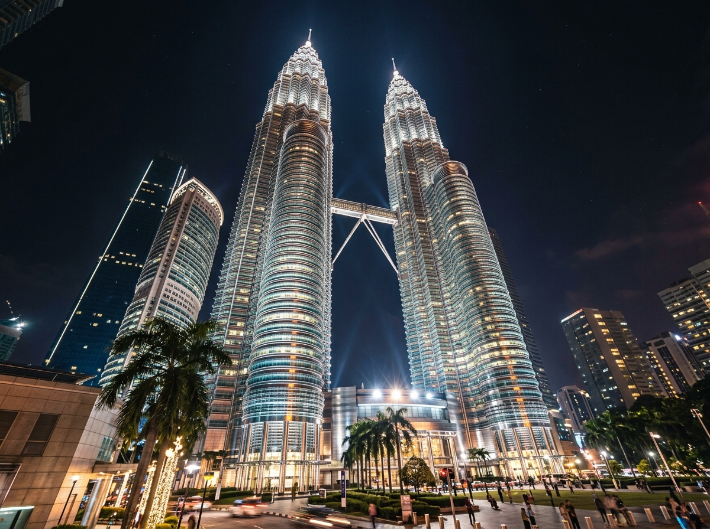
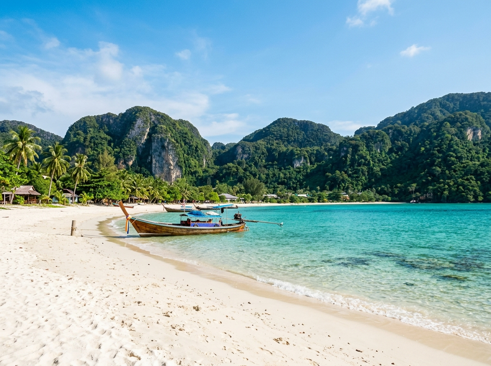
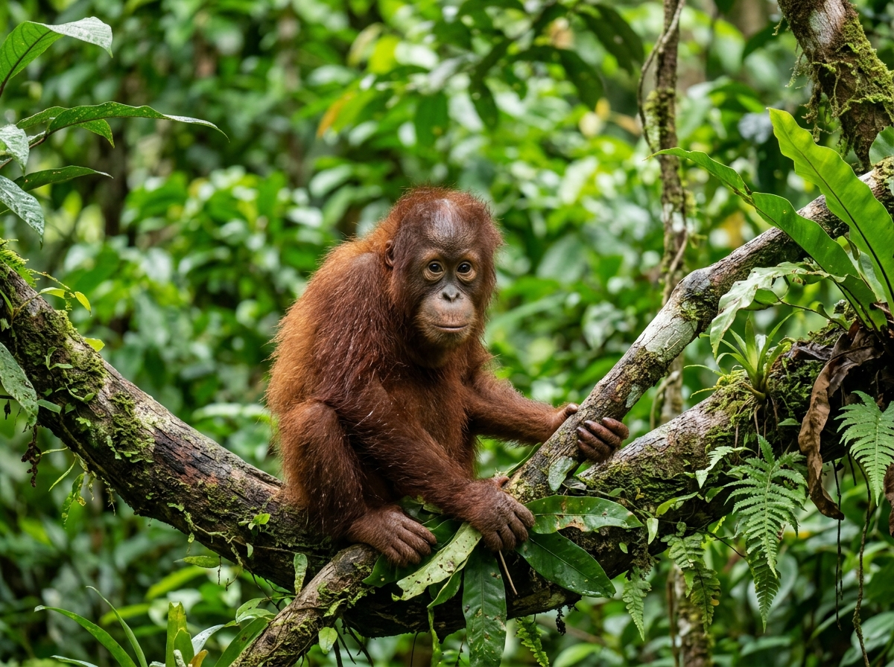

Where Should You Go?
Malaysia is geographically divided into Peninsula Malaysia and East Malaysia (Borneo). Each offers completely different vibes and experiences.

Kuala Lumpur
The bustling heart of Malaysia, KL is home to the stunning Petronas Twin Towers, cultural spots like Batu Caves, endless shopping malls, and delicious food districts.
Explore Kuala Lumpur
Penang
Widely considered the food capital of Malaysia, Penang's capital George Town is a UNESCO World Heritage site filled with colonial buildings, vibrant street murals, and delicious food.
Explore Penang
Langkawi Island
An archipelago of 99 islands, Langkawi is a duty-free haven featuring pristine sandy beaches, steep forested hills, geological wonders, and scenic sky views.
Explore Langkawi
Borneo (Sabah & Sarawak)
Explore Malaysia's untamed wild side. Home to the towering Mount Kinabalu, ancient caves of Mulu National Park, indigenous tribes, and rare orangutans.
Explore Borneo